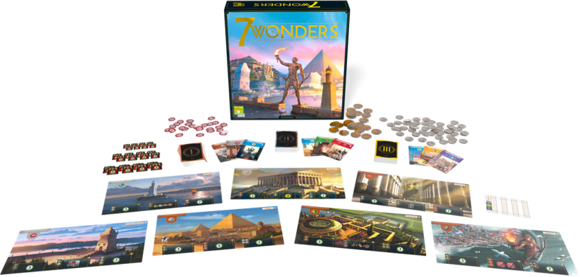
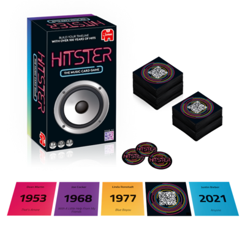

5 juegos de mesa que necesitas en tu colección
Con la marcha del verano, las lluvias y el frío no hacen más que acercarse. ¿Hay algo más apetecible que una tarde de juegos de mesa en el calor del hogar? Probablemente no se te ocurra nada mejor y al equipo de Game Yard tampoco. Por eso os traemos un ranking de 5 juegos que necesitas conocer para darle diversión y variedad a esas tardes de juegos. Todos estos juegos son especiales a su manera y no podemos aconsejaros otra cosa que probarlos todos. Sin más preámbulos, ¡vamos a ello!
-
7 Wonders
 7 Wonders. ¿Logrará tu maravilla sobrevivir a los avatares del tiempo? En primer lugar tenemos 7 Wonders. El juego que presume de ser el más premiado del mundo. Se trata de un juego competititvo en el que podrás luchar con tus amigos por ver quién encumbra su ciudad tras 3 eras de desarrollo. Ambientado en ciudades clásicas de renombre y con un sistema de puntuación basado en 5 aspectos diferentes (maravillas, edificifación, guerra, ciencia y comercio), 7 Wonders te ofrece una oprtunidad nueva en cada partida para probar diferentes estrategias. Además de todo esto, el juego tiene disponibles diversas expansiones para dinamizar la experiencia una vez la hayas dominado.
Ficha técnica
- Número de jugadores: 3-7
- Edad mínima recomendada: 10+
- Tiempo de juego aproximado: 30 minutos
-
Hitster
 Hitster. ¿Cuántas te sabes? En segundo lugar, Hitster nos ofrece una experiencia de juego fresca, dinámica y que va de la mano de la tecnología. Necesitarás un dispositivo capaz de leer códigos QR y muchas ganas de escuchar verdaderos hits. Con un repertorio que abarca desde la primera mitad del siglo pasado hasta nuestros días, personas de todas las edades pueden disfrutar con él. La jugabilidad del juego se basa en adivinar de qué año son los temazos planteados por las cartas de juego. Si, además, te sabes el título de la canción y el artista serás un verdadero hitster!
Ficha técnica
- Número de jugadores: 2-10
- Edad mínima recomendada: 16+
- Tiempo de juego aproximado: 30 minutos
-
Ciudadelas
Ciudadelas. Riquezas, ambición, intriga. En tercer lugar, Ciudadelas. Se trata de un clásico de clásicos. Con su primera aparición en el año 2000 en Alemania, ciudadelas cautivó a los fans de los juegos de estrategia con sus intrigantes rondas. El objetivo amplio del juego es contruir tu ciudadela mejor y más rápido que el resto de jugadores. En cada ronda, uno de los jugadores debe descartar a uno de los 8 personajes disponibles (cada uno con unas habilidades concretas) sin saber cuál se descarta. Por tunos, los demás jugadores eligen qué personaje serán esa ronda y tratarán de avanzar con su ciudadela. El asesino, el ladrón, el mago, el condotiero, ... ¿Qué habrá escogido cada jugador?¿Te asesinarán en esta ronda? ¿Te robarán tu oro? ¿Destruirán tus edificios?
Ficha técnica
- Número de jugadores: 2-7
- Edad mínima recomendada: 14+
- Tiempo de juego aproximado: 45 minutos
-
Codigo Secreto

CÓdigo Secreto. El juego de las claves y el espionaje En cuarto lugar, Código Secreto. Preparate para una dinámica de grupo muy especial en la que tendrás que hacer que tus compañeros acierten en sus decisiones con tan solo una palabra. Con un montón de palabras dispersas por la mesa, cada equipo deberá escoger por turnos las palabras que els corresponden en base a la pista dada por el miembro de su equipo que conoce el código secreto. Cuidado con equivocarse porque podrías acabr haciéndole un favor al equipo enemigop o incluso perdiendo la partida si es que eliges la palabra prohibida.
Ficha técnica
- Número de jugadores:4-12
- Edad mínima recomendada: 14+
- Tiempo de juego aproximado: 30 minutos
-
Paleo
Paleo, una aventura paleolítica En primer lugar, Paleo. Paleo es una joya. Es uno de esos juegos que te obsesionan y dejas de sentir el paso del tiempo. Amanece un nuevo día en tu grupo del paleolítico, ¿serás capaz de alimentrar al grupo, conseguir materiales y protegerte de los peligros? Con un sistema de juego cooperativo basado en niveles, la experiencia de paleo os hará tomar decisiones conjuntas por el bien de la tribu. Cuidado con ser demasiado cautos porque sin riesgos vuestra tribu tampoco sobrevivirá. El juego termina cuando logreís obtener todas las piezas de la pintura rupestre o cuando hayáis acumulado 5 calaveras en base a vuestras decisiones. Cada nivel ofrece un desafio diferente, fresco y desafiante. Por si esto fuera poco, también tiene varias expansiones disponibles (algunas de ellas de formagratuita). No esperes más y lánzate a esta aventura paleolítca.
Ficha técnica
- Número de jugadores: 2-4
- Edad mínima recomendada: 12+
- Tiempo de juego aproximado: 90 minutos